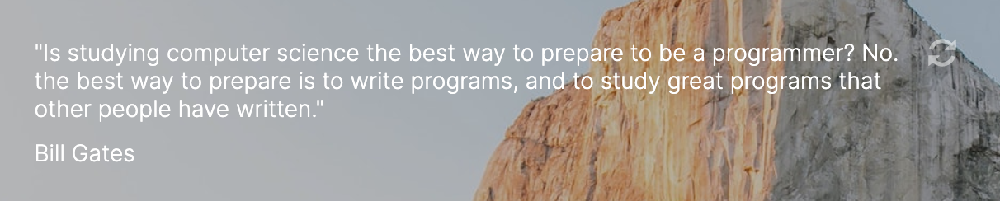
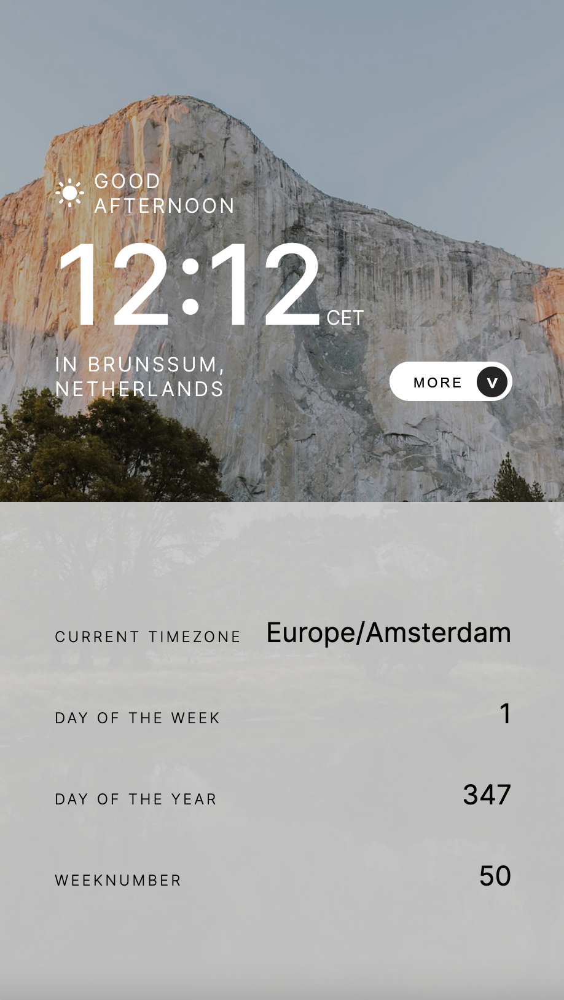

Project: Quote Clock
I created this app as a practice project to further develop my API integration, JavaScript, HTML and CSS skills. This code is the solution to one of the challenges developed by frontendmentor.io. They provided the raw materials, such as the text and the images. I wrote the code.
The challenge was to:
- View the optimal layout for the site depending on their device's screen size
- See hover states for all interactive elements on the page
- View the current time and location information based on their IP address
- View additional information about the date and time in the expanded state
- Be shown the correct greeting and background image based on the time of day they're visiting the site
- Generate random programming quotes by clicking the refresh icon near the quote
Example desktop view:

The clock shows the current time in 24 hour notation, refreshed every second. When a minute ends, it is immediately reflected in the adjusted and correct time. The time is shown through a date object that is created locally, once a user visits the app.
A geo location API is used to retrieve the IP address and accompanying location data of the user. The location data is saved into variables and then used to display the users' city and country underneath the clock. The location data is coarse and imprecise, but a nice addition.
The Worldtime API is used to display additional information to the user, under the expandable slider tab:

Another feature are the programmer quotes, also fetched through an API. The quotes are fetched on loading of the page, but can also be retrieved by the user, by clicking on the refresh button on the right side of the quote:
The website is responsive and the grid inside the slider adjusts accordingly when the screen size is changed to mobile:
